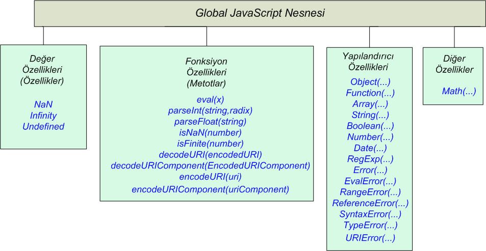

JavaScript Temelleri
Bölüm 3
Global JavaScript Nesnesi
Bölüm 3 Sayfa 1
3.1 - Global JavaScript Nesnesinin Tanıtımı
JavaScript yorumlayıcıları belirli bir konukçu (host) ortam içinde konuk edilmeleri ve JavaScript programlarına bu ortam aracılığı erişlmesi gerekir. Deeysel çalışmlar dışında, kendi başına çalışan (stand alone) bir JavaScript yorumlayıcısı yoktur. JavaScript programları Web sayfaları düzenlenmesi ile yakından ilgili olduklardan, JavaScript yorumlayıcısını konuk eden ortamların en önde gelenleri, Web belge çözümleyicileridir. Web belge çözümleyicileri değişik ticari kuruluşlara ait patentli yazılımlardır. Her kuruluşun kendi ortamına uygun, kendi özel JavaScript yorumlayıcısı bulunmaktadır.
Eğer etkili bir standartlaşma sağlanamazsa, JavaScript programları farklı ortamlarda farklı programlma öğeleri içerebilirler ve bu uyumsuzluk ortak olarak her ortamda çalışan programların yazılabilmesini olanaksız hale getirir.
JavaScript yorumlayıcıları nesne temeline dayalı yazılımlardır. Bu yazazılımın en tepesine bir süper sınıf bulunur. Tüm diğer programlama ögeleri bu süper sınıfın alr sınıfları olarak tasarlanmışlardır. Standartlaşmanın gereği olarak, her JavaScript yorumlayıcısı standartlarla belirlenmiş bir nesne gurubunu yorumlamak zorundadır.
JavaScript yorumlayıcılarının minimum standartlarını belirleyen kuruluş ECMA tarafından belirlenmiş ECMA-262 üçüncü sürüm spesifikasyonuna göre, JavaScript yorumlayıcıları en az bu spesifikayonda belirlenmiş nesneleri içermelidirler. Bu nesnelere çekirdek nesneler adı verilir. JavaScript yorumlayıcıları çekirdek nesnelere ek olarak kendi özel nesnelerini de içerebilirler. Bunlara konuk eden ortam nesneleri adı verilir. Konuk eden ortamların özel eklentileri belirli bir standardla sınırlanmamıştır. Her ortam kendi özel nesnelerini kendi JavaScript yorumlayıcısına ekleyebilir.
ECMA tarafından standartlaştırılmış çekirdek nesneleri, bilgi-işlem amacına yöneliktir. Sonuçların, görüntülenmesi, JavaScript yorumlayıcısı tarafından aktarılan bilgilerin belirli (X)HTML elementlerinin içeriği haline getirilmesi ile gerçekleşir. JavaScript yorumlayıcısının (X)HTML elementleri ile etkileşimini sağlayan program öğeleri, konuk eden ortamın özel eklentileridir. Bu konuda da belirli bir standart sağlanamadığı durumlarda programcılar için ortak olarak her ortamda çalışacak yazılımların geliştirilebilmesi çok güçleşecektir. Bu konuda da W3C DOM standartlarını sağlayarak, her belge çözümleyicinin içermesi gereken etkileşim yöntemlerini belirtmiştir. Bu iki standart, programcılara rahat bir nefes aldırmış ve her ortamda çalışabilecek belge çözümleyiciler arası JavaScript programlarının yazılmasını sağlamıştır. Bu çalışmalarda da bu hedef gözetilmiştir. Bu konuda ilk olarak JavaScript Çekirdek Nesneleri incelenecek daha sonra W3C DOM standartları ele alınacaktır.
Bir JavaScript program çalıştırma ortamına girildiğinde, JavaScript yorumlayıcısı da çalışmaya başlar. JavaScript yorumlayıcısı ilk olarak Global JavaScript Nesnesi olarak adlandırılan süper sınıfı oluşturur. Belge çözümleyici ortamlarda bu tepe nesne, her konuk eden ortamın window nesnesidir.
Her konuk eden ortamın window nesnesi, konuk eden ortama özgüdür ve konuk eden ortamın desteklediği standartlarda belirtilen alt nesneleri içerir.
JavaScript yorumlayıcısını konuk eden ortamlar arasında, belge çözümleyicisi olmayan ilginç bir ortam, biraz sonra inceleyeceğimiz, Global JavaScript Nesnesinin ( bir noktada window nesnesinin) eval() metodunun içeriğidir. Bu metodun içeriği, başlı başına bir Javascript programlama ortamı olarak etki eder ve içerik kodlarının yorumu için ayrı bir Global JavaScript Nesnesi oluşur. eval() kodlarının çözümlenmesi tamamlandığında, bu kodların çözümünü sağlayan Global JavaScript Nesnesi de kaybolur.
Her çalıştırma ortamında, sadece bir tek Global JavaScript Nesnesi (global nesne olarak adlandırılabilir) altında çalışılabilir. Kullanıcı Global JavaScript Nesnesinin ön tanımlı metot ve özelliklerine serbestçe ulaşabilir, fakat, ileride göreceğimiz nesne yapılandırıcısı new() ile yeni bir Global JavaScript Nesnesi yaratamaz.
Global nesnenin bir çağrı yazılımı yoktur, bir fonksiyon olarak çağrılamaz.
Global JavaScript Nesnesinin metotlarına, üst düzey programlama alanı olarak adlandırılan, herhangibir,
<script> ... </script>
elementi içeriğinde, fonksiyon tanımı dışında olan herhangibir satırdan, this saklı sözcüğü ile erişilebilir, fakat bu gerekli değildir. Örnek,
this.window.alert("x");ile,window.alert("x");this.alert("x");vealert("x");
aynı işlevi görür. İçinde çalışılan Global JavaScript Nesnesinin ve içinde çalışılan pencerenin belirtilmesi gereği yoktur. Bunlar, varsayılan pencere ve varsayılan Global JavaScript Nesnesi olarak algılanır.
Global JavaScript Nesnesinin hiç bir öntanımlı değer özelliği ( özellik) fonksiyon özelliği (metot) ve nesne özelliği (öntanımlı nesne) silinemez, fakat yeni değer ve fonksiyon özellikleri (metotlar) sınırsız olarak yaratılabilir. Örnek:
this.window.x=8;ile,window.x=8;this.x=8;vex=8;
aynı işlevi görür. Bu ifade bir global değişken ataması veya global nesneye yeni bir global değer özelliği (özellik) eklenmesi olarak düşünülebilir. Her ikisi de aynı anlama gelir.
Global JavaScript Nesnesine eklenen her yeni özellik, global kapsamdadır. Yani, üst düzey çalışma alanında, fonksiyon tanımı dışında bir değişken tanımlanırsa bu global kapsamda bir değişken olur.
Fonksiyon içeriklerinde yerel (lokal) çağrı nesneleri (call objects) oluşur. Yerel (lokal) değişkenler de bu yerel çağrı nesnelerinin özellikleridir.
ECMA-262 üçüncü sürüm Spesifikasyonu, Çekirdek JavaScript Özellikleri olarak da adlandırılan, Global JavaScript Nesnesinin özellikleri aşağıda görüldüğü şekilde tanımlamıştır:

Şekil 3.1 - Global JavaScript Nesnesinin Öntanımlı Özellik ve Metotları
Bu şekil 3-1 de, en soldaki sütunda Global JavaScript Nesnesinin değer özelliklerini (kısaca özelliklerini) görüyoruz. Global JavaScript Nesnesi, tek süper sınıf olduğu ve başka hiçbir nesnenin alt nesnesi olmadığından, özellikleri bir tür öntanımlı global değişken olarak kabul edilebilir.
Global JavaScript Nesnesinin metotları, yani fonksiyon özellikleri iki (hatta üç, hatta yapılandırıcı fonksiyonların bir de tür dönüştürücü fonksiyon olarak kullanılabilmelerinden dolayı dört) tür metot tipini içerir.
Bunlardan ilki şekil 3.1 de soldan ikinci sütunda, fonksiyon özellikleri olarak belirtilen metotlardır. Global JavaScript Nesnesi hiçbir nesnenin alt nesnesi olmadığından bu metotlar bağımsız olarak çağrılabilen hazır fonksiyonlar olarak görev yaparlar.
Global JavaScript Nesnesinin metotlarının bir kısmı, ayrı bir sütünda toplanmışlardır. Bu metotlar, Global JavaScript Nesne sınıfının, öntanımlı alt nesne sınıflarının örneklerini üretmeye yarayan, öntanımlı yapılandırıcı fonksiyonlardır. Bu yapılandırıcı fonksiyonların yazılımı kullanıcıya kapalı, kullanımları açık ve sınırsızdır.
Global JavaScript Nesnesinin üçüncü tür olarak adlandırılabilecek türde tek metodu, Math() metodudur. Bu metoda, metot olmayan metot adı verilir. Bunun nedeni, bu metodun yapılandırıcı bir fonksiyon olmaması, metot olarak çağrılamamasıdır. Math bir nesne sınıfı değildir ve örnekleri üretilemez. Math() metodu daha çok Global JavaScript Nesnesinin, Math adında bir öntanımlı nesnesi olarak, global bir nesne şeklinde görev yapar.
Math Nesnesinin yapısı, günümüzde Java gibi, katı sınıf temeline dayalı programlama dillerinin yapılarının büyük bir yaygınlıkla sorgulanmasına yol açmıştır. Java belki gösterici (pointer) aritmetiği ile uğraşmak istemeyen programcılar için bir kolaylık sağlamıştır. Fakat, programcılar, C++ den Java 'ya geçerken kazandıkları kolaylıklar yanında, katı sınıf hiyerarşisine uymak zorunda kalmışlardır. İlk zamanlar büyük bir ilerleme gibi kabul edilen katı nesne teknolojisi, bugün sorgulanmaktadır. Programcılar, hiç örnek üretilmeyecekse, Math nesnesinin gereğinin ne olduğunu sorgulamakta ve belki bunun yerine hazır fonksiyonların daha kullanışlı olacağını düşünmektedirler. Bugün yavaş yavaş en iyi programlama yönteminin ADA ve C++ de olduğu gibi, hibrid bir teknoloji olacağı, gereğinde prosedüral gereğinde nesne yönelimli yöntemlerin kullanılmasının daha uygun olacağı düşünülmektedir. JavaScript tam burada en doğru noktada bulunmaktadır. JavaScript programlama dili kullanıcıya Java teknolojisinin olanak ve kolaylıklarını sağlarken, ADA gibi hibrid teknolojilerinin kullanımına da olanak sağlamaktadır. JavaScript programlama dili bu yönü ile, çağının ilerisinde bir programlama dili ile çalışmanın mutluğunu yaşatmaktadır.
Global JavaScript Nesnesinin bir başka ilginç metot gurubu da gizli global fonksiyonlar olarak tanımlanabilecek, öntanımlı nesne sınıfı yapılandırıcı foksiyonları, Boolean(), Number(), String(), Object() yapılandırıcı fonksiyonlarının, fonksiyon olarak uygun argümanlarla çağrıldıklarında, global nesnenin bir metodu olarak hareket ederek açık (explicit) veri tipi değişimini gerçekleştirmeleridir.
Global JavaScript Nesnesinin tüm özellikleri (değer ve fonksiyon özellikleri), herhangibir nesne ile ilişkili olmadıklarından, üst düzey özellikler olarak da adlandırılırlar.
3.2 - Global JavaScript Nesnesinin Değer Özellikleri (Özellikleri)
3.2.1 -NaN
NaN saklı sözcüğü, NaN (Not a Number) sözcüklerinin kısaltılmış şeklidir. Bu değer, kullanıcı tarafından bir değişkene atanmaz, fakat bir işlemcide uygun olmayan işlenenlerin kullanılması gibi durumlarda, JavaScript yorumlayıcısı tarafından üretilir.
3.2.2 - Infinity
Infinity özelliğinin başlangıç değeri, +∞ değeridir. Infinity değeri, kullanıcı tarafından kullanılmaz, hesapların sonuçlarında ortaya çıkar.
3.2.3 - Undefined
Undefined özelliğinin başlangıç değeri, undefined değeridir. Bu değer program adımlarında, tanıtılmamış bir değerin kullanılmak istenmesi gibi durumlarda ortaya çıkar. Veri tipi olarak undefined, JavaScript programlama dilinin beş ilkel (primitif) veri tipinden biridir. Gerektiğinde, kullanıcı tarafından değişkenlere literal olarak atanabilir.
Programlarda değişkenlere undefined değerinin atanması, aslında gerekli olmayan bir program adımıdır. JavaScript yorumlayıcısı, kullanıcılar tarafından atanmış olan undefined değerlerini bilinen bir değer olarak kabul eder ve program çalışmasını bir hata mesajı ile kesmez. Bu konuda bir uygulama 2.2.1 de verilmiştir.